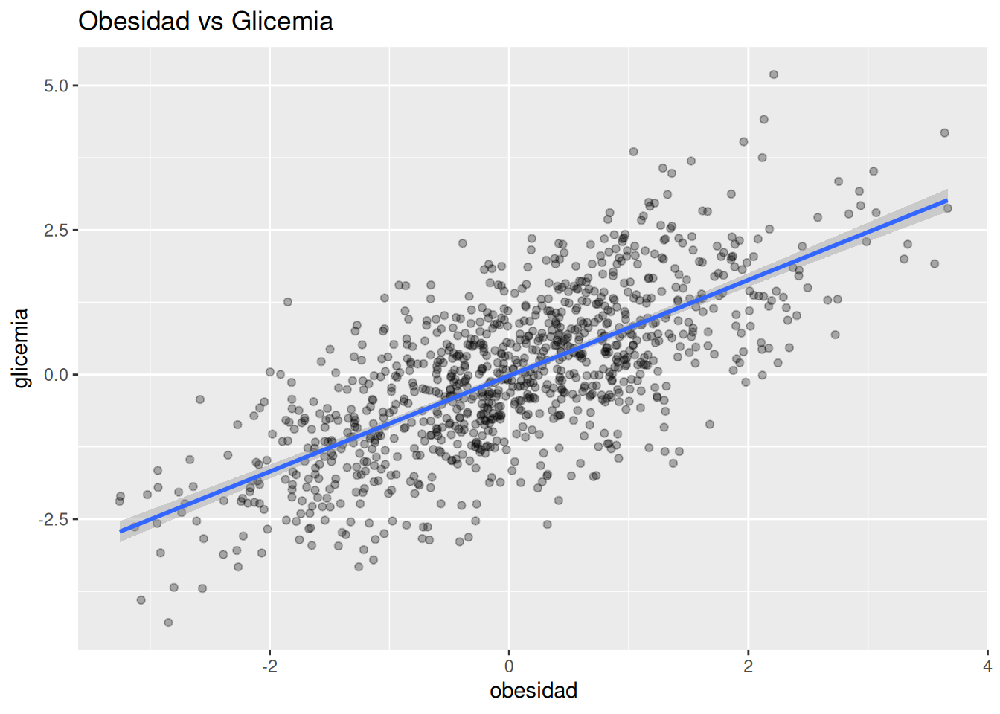
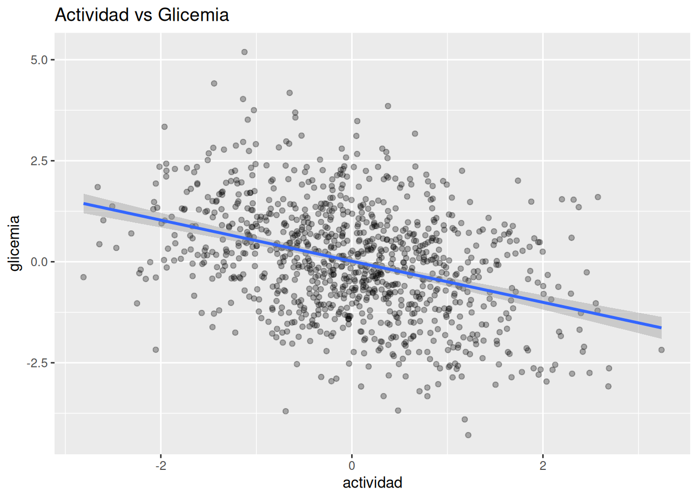
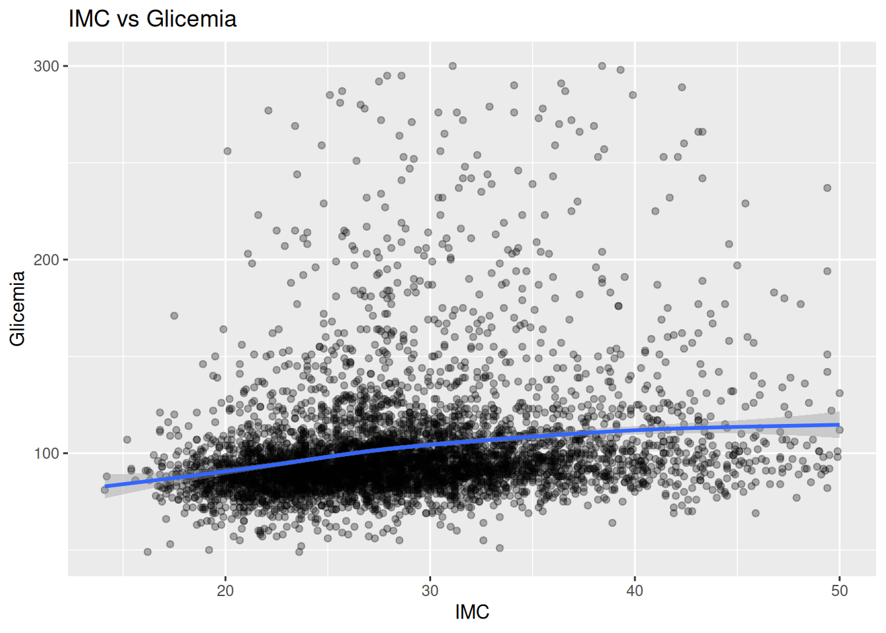
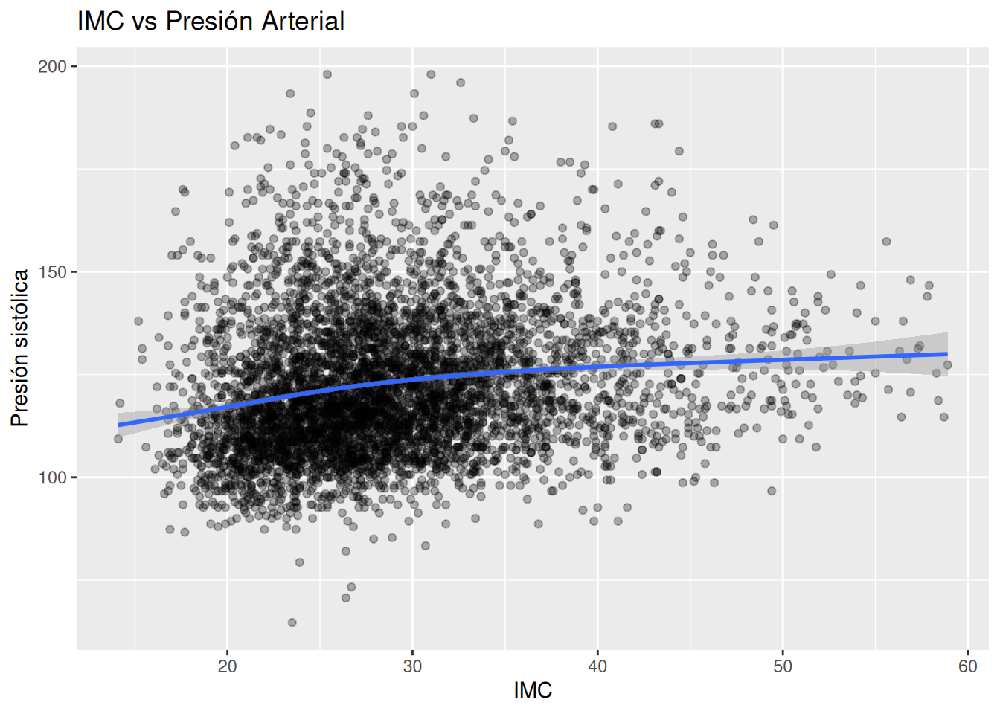
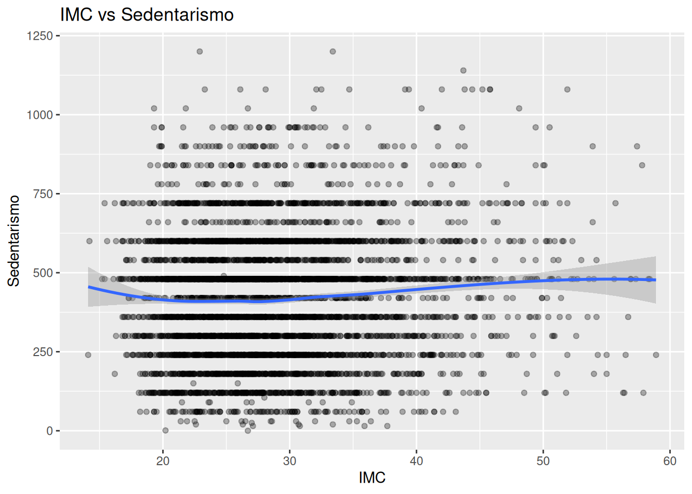
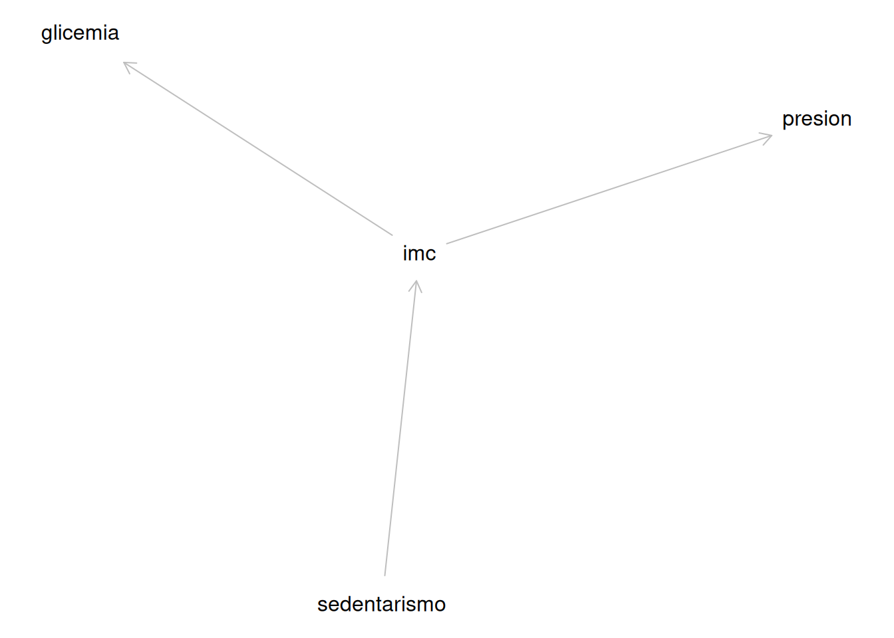
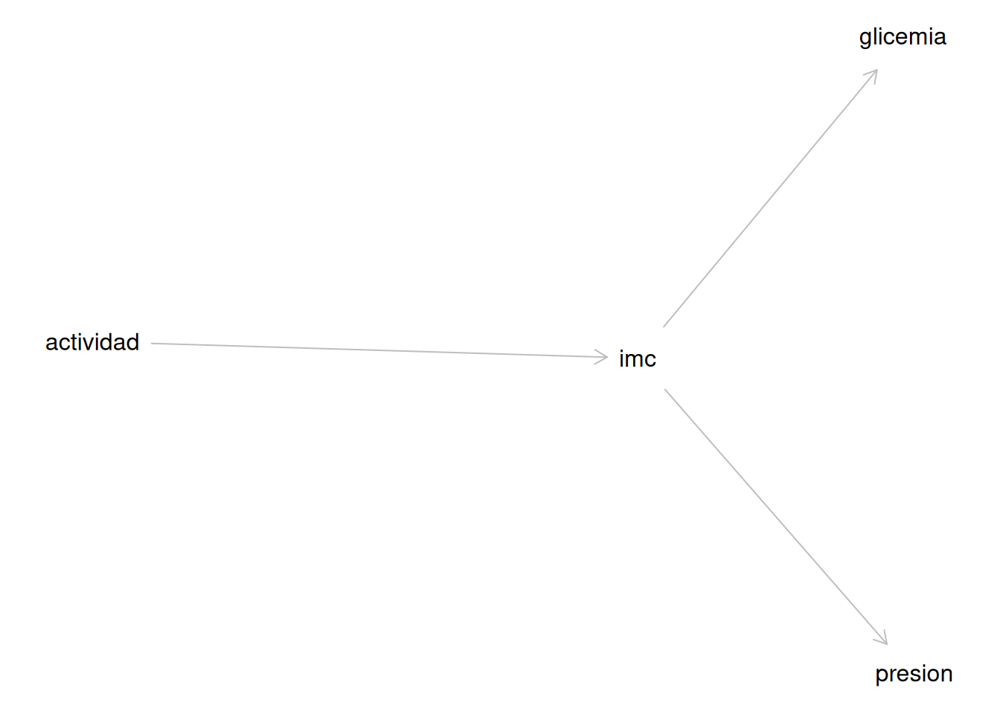

set.seed(123)
# Simular 1000 pacientes
n <- 1000
# Crear simulación con las variables actividad física, obesidad y
# glicemia
df_sim <- tibble(
# Simular actividad física
actividad = rnorm(n, mean = 0, sd = 1),
# Simular obesidad con una media de cero y una desviación de uno
obesidad = 0.7 * (-actividad) + rnorm(n, 0, 1),
# Simular glicemia con una media de cero y una desviación de uno
glicemia = 0.8 * obesidad + rnorm(n, 0, 1)
)8.- Introducción a DAGs
1. Intuición (SIN código)
Imagina que estás en consulta y observas lo siguiente:
- Pacientes con mayor IMC suelen tener mayor presión arterial
- También suelen tener mayor glicemia
Hasta aquí, todo parece claro… pero hay una trampa.
👉 Ver que dos variables se mueven juntas no significa que una cause la otra.
Entonces… ¿qué es un DAG?
Un DAG (Directed Acyclic Graph) es una forma de dibujar una historia causal.
Se compone de:
- Nodos → variables (IMC, glicemia, actividad física…)
- Flechas → relaciones causales (qué influye sobre qué)
Ejemplo simple:
Obesidad → Presión arterial
Esto se lee como: 👉 “La obesidad influye en la presión arterial”
¿Qué significa “dirigido”?
Las flechas tienen dirección:
´Actividad física → Obesidad´
No es lo mismo que:
Obesidad → Actividad física
👉 La dirección importa clínicamente.
- Si la actividad física reduce la obesidad → intervención útil
- Si la obesidad reduce la actividad física → efecto secundario
¿Qué significa “acíclico”?
“Acíclico” significa que no hay bucles cerrados.
Esto NO es válido en un DAG:
A → B → C → A
Porque genera una contradicción temporal: ¿qué ocurrió primero?
👉 Un DAG siempre representa una historia que fluye en una sola dirección.
El error más común: confundir correlación con causalidad
Ejemplo clínico clásico:
- Personas con obesidad tienen mayor glicemia
- Pero… ¿por qué?
Posibles explicaciones:
- Obesidad → resistencia a la insulina → glicemia
- Dieta alta en carbohidratos → obesidad y glicemia
- Sedentarismo → obesidad y glicemia
👉 Mismo dato… tres historias causales distintas
Aquí es donde entra el DAG
Un DAG te obliga a responder:
👉 ¿Cuál es la historia que creo que está ocurriendo?
Por ejemplo:
´Actividad física → Obesidad → Glicemia´
o
Dieta → Obesidad
Dieta → Glicemia
Conexión con La Teoría Hormonal de la Obesidad
En el enfoque de La Teoría hormonal de la obesidad:
- La obesidad no es solo exceso de calorías
- Es un sistema hormonal complejo
Un DAG más cercano a esa visión sería:
Insulina → Obesidad
Insulina → Glicemia
Inflamación → Resistencia a la insulina
👉 Esto ya no es una simple asociación
👉 Es una red causal
Idea clave del capítulo
Un DAG no es un modelo estadístico. Es una forma de pensar correctamente antes de modelar.
2. Ejemplo simple (simulación en R)
Vamos a simular una historia causal muy básica:
👉 Actividad física → Obesidad → Glicemia
Veamos las relaciones
# Diagrama de dispersión que relaciona la obesidad con la glicemia
ggplot(df_sim, aes(x = obesidad, y = glicemia)) +
geom_point(alpha = 0.3) +
geom_smooth(method = "lm") +
labs(title = "Obesidad vs Glicemia")
👉 Verás una relación positiva clara.
Pero ahora mira esto
# Diagrama de dispersión que relaciona la actividad física con la
# glicemia
ggplot(df_sim, aes(x = actividad, y = glicemia)) +
geom_point(alpha = 0.3) +
geom_smooth(method = "lm") +
labs(title = "Actividad vs Glicemia")
👉 También aparece una relación.
¿Qué está pasando?
La actividad física no afecta directamente la glicemia, pero parece que sí.
¿Por qué?
👉 Porque:
Actividad → Obesidad → Glicemia
Esto se llama:
👉 efecto indirecto
Aprendizaje clave
Puedes ver una asociación sin que exista una relación directa.
3. Ejemplo aplicado con NHANES
Ahora llevemos esta idea a datos reales.
Variables:
- BMXBMI → IMC
- LBXSGL → glicemia
- BPXSY_mean → presión arterial
- PAD680 → minutos de actividad sedentaria
# Seleccionar sólo las variables que voy a usar
df_joint <- df_obesidad %>%
select(BMXBMI, LBXSGL, BPXSY_mean, PAD680) %>%
drop_na()Primero: pensar el DAG (ANTES del código)
Una posible historia clínica:
Actividad física → IMC → Glicemia
IMC → Presión arterial
Visualización simple
# Diagrama de dispersión que relaciona el índice de masa corporal
# con la glicemia
df_joint %>%
filter(
LBXSGL <= 300,
BMXBMI <= 50
) %>%
ggplot(aes(x = BMXBMI, y = LBXSGL)) +
geom_point(alpha = 0.3) +
geom_smooth() +
labs(
title = "IMC vs Glicemia",
x = "IMC",
y = "Glicemia"
)
Otra relación
# Diagrama de dispersión que relaciona el índice de masa corporal
# con la glicemia
df_joint %>%
filter(
BPXSY_mean <= 200,
BMXBMI <= 60
) %>%
ggplot(aes(x = BMXBMI, y = BPXSY_mean)) +
geom_point(alpha = 0.3) +
geom_smooth() +
labs(
title = "IMC vs Presión Arterial",
x = "IMC",
y = "Presión sistólica"
)
Otra relación
# Diagrama de dispersión que relaciona el sedentarismo con el índice
# de masa corporal
df_joint %>%
filter(
PAD680 <= 1250,
BMXBMI <= 60
) %>%
ggplot(aes(x = BMXBMI, y = PAD680)) +
geom_point(alpha = 0.3) +
geom_smooth(method = "loess") +
labs(
title = "IMC vs Sedentarismo",
x = "IMC",
y = "Sedentarismo"
)
Aquí está el punto importante
Estas gráficas muestran:
👉 asociaciones
Pero NO te dicen:
- si IMC causa glicemia
- si glicemia causa IMC
- si ambas dependen de otra variable
Introducción a dagitty
Podemos dibujar nuestro DAG:
library(dagitty)
# Dag de sedentarismo, imc, glicemia y presión
dag <- dagitty("
dag {
sedentarismo -> imc
imc -> glicemia
imc -> presion
}
")
plot(dag)
👉 Esto no es un modelo…
👉 es una hipótesis causal explícita
4. Interpretación clínica
Aquí es donde todo cobra sentido.
Pensamiento tradicional (incorrecto)
“IMC está asociado con glicemia → IMC causa glicemia”
❌ Problema: No consideraste la estructura causal.
Pensamiento con DAGs
“Creo que:”
- La actividad física reduce el IMC
- El IMC afecta glicemia
- El IMC también afecta presión arterial
👉 Esto es una historia clínica coherente
¿Por qué esto es tan importante?
Porque en medicina:
👉 Las decisiones son causales, no correlacionales
- No tratas asociaciones
- Tratas causas
Ejemplo clínico real
Si observas:
- Alta glicemia
- Alto IMC
La pregunta no es:
❌ “¿Están relacionados?”
La pregunta es:
👉 “¿Qué está causando qué?”
Conexión con obesidad e inflamación
En el contexto de La Teoría Hormonal de la Obesidad:
- Insulina elevada → obesidad
- Obesidad → inflamación
- Inflamación → resistencia a la insulina
👉 Esto NO es lineal
👉 Es un sistema complejo
Pero los DAGs te permiten:
✔ simplificar
✔ pensar
✔ evitar errores
Mensaje final del capítulo
Antes de correr cualquier modelo, primero dibuja la historia.
Porque:
👉 El modelo aprende de los datos
👉 Pero tú decides qué historia tiene sentido
Lo que viene después
En el siguiente capítulo aprenderás:
👉 Cómo usar DAGs para decidir qué variables ajustar
👉 y evitar errores comunes como el sesgo por confusión
Ejercicios
Ejercicio 1 — Leer una historia causal
Observa este DAG:
actividad_fisica → imc → glicemia
Responde:
- ¿Qué variable parece influir directamente sobre el IMC?
- ¿Qué variable parece influir directamente sobre la glicemia?
- ¿La actividad física tiene un efecto directo o indirecto sobre la glicemia?
- Explica esta historia como si se la contaras a un paciente.
Ejercicio 2 — Crear una historia causal alternativa
Supón que observas que las personas con mayor IMC también tienen mayor presión arterial.
Dibuja dos historias causales distintas que puedan explicar esta asociación.
Por ejemplo:
- Una donde el IMC cause presión arterial
- Otra donde ambas dependan de una tercera variable
Puedes escribirlo así:
variable → variable
Pregunta guía:
- ¿Podría existir una variable escondida que esté afectando a ambas?
Ejercicio 3 — Correlación no significa causalidad
Piensa en esta asociación:
Más actividad física vigorosa ↔︎ mayor IMC
Propón al menos tres explicaciones posibles:
- Una explicación donde el ejercicio aumente el IMC
- Una explicación donde el IMC aumente el ejercicio
- Una explicación donde exista otra variable involucrada
Pista clínica:
Recuerda que algunas personas con obesidad empiezan a hacer mucho ejercicio justamente porque ya tienen obesidad.
Ejercicio 4 — Dibujar tu primer DAG con obesidad
Construye un DAG simple usando estas variables:
- Sedentarismo
- IMC
- Glicemia
- Presión arterial
Reglas:
- Usa entre 3 y 5 flechas
- No hagas ciclos
- Intenta que la historia tenga sentido clínico
Ejemplo de formato:
sedentarismo → imc
imc → glicemia
imc → presion
Después responde:
¿Por qué elegiste esas flechas y no otras?
Ejercicio 5 — Encontrar un error causal
Observa este DAG:
imc → glicemia
glicemia → actividad_fisica
actividad_fisica → imc
- ¿Por qué este DAG no es válido?
- ¿Qué significa que tenga un ciclo?
- ¿Cómo podrías corregirlo?
Ejercicio 6 — Traducir consulta médica a DAG
Imagina este paciente:
- Tiene obesidad
- Tiene presión arterial elevada
- Tiene glicemia alta
- Refiere dormir poco
Pregunta:
¿Cómo podrías representar esta historia usando un DAG?
Pista:
Tal vez el sueño influye sobre más de una variable.
Ejercicio 7 — Pensar en la obesidad como problema hormonal
Construye un DAG inspirado en la idea central de La Teoría Hormonal de la Obesidad.
Debe incluir al menos estas variables:
- Insulina
- Obesidad
- Inflamación
- Glicemia
Después responde:
- ¿Cuál parece ser la variable más “importante” en tu DAG?
- ¿Qué variable parece estar más “al final” de la cadena?
- ¿Cómo cambiaría tu tratamiento si crees que la insulina está “arriba” en la historia causal?
Ejercicio 8 — DAG con NHANES
Usa estas variables reales:
- BMXBMI
- LBXSGL
- BPXSY_mean
- PAD680
Escribe un DAG sencillo usando los nombres reales de NHANES.
Por ejemplo:
PAD680 → BMXBMI
BMXBMI → LBXSGL
BMXBMI → BPXSY_mean
Después responde:
- ¿Qué variable parece ser la más “causal”?
- ¿Qué variable parece ser más “resultado”?
- ¿Cuál sería la variable más interesante para intervenir clínicamente?
Ejercicio 9 — Dibujar un DAG con dagitty
Intenta escribir este código y modificarlo:
mi_dag <- dagitty("
dag {
actividad -> imc
imc -> glicemia
imc -> presion
}
")
plot(mi_dag)
Ahora agrega una nueva variable, por ejemplo:
- sueño
- estrés
- inflamación
- insulina
Pregunta:
¿Cómo cambia la historia cuando agregas una nueva variable?
Ejercicio 10 — El más importante de todos
Escoge cualquier asociación que hayas visto en NHANES y responde:
- ¿Qué variables están asociadas?
- ¿Cuál sería la explicación causal más obvia?
- ¿Qué otras explicaciones podrían existir?
- ¿Qué DAG resumiría mejor esa historia?
Objetivo final:
Empezar a pensar menos como “alguien que mira correlaciones” y más como “alguien que intenta entender causas”.